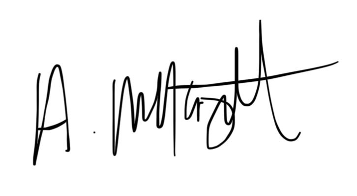

Abstract:
My names Adam, I’m looking for a full-time Web Development job! I think I can effectively do the job. Read
more below...
Hey There –
I’m Adam McKnight a Software Engineer with a focus on front-end web development. My passion for computers started when I was a little kid, and the rest, well is history.
In 2013 I started volunteering at my Church recording and editing videos, which over the years led to designing graphics. This urge to be creative then led to me taking a pivotal step, by attending Butler Tech, D. Russel Lee during my Junior and Senior years of High School. In 2016, I graduated with both High School Credentials and a Certificate of Digital Media.
After graduating High School I took the normal route of applying for colleges. Landing on my local community college as the best option. While attending my first year in 2017, I was introduced to Web Development. Shortly thereafter, I was “hooked”.In 2019, three years after my “supposed graduation date” and applying for jobs realizing my degree wouldn’t matter – I left college. Since then, I’ve been working with Various Companies on a contract basis like Miami University, CityGate Church.
Now, I’m actively seeking a full-time Software Engineering position.
You can read more about my Skills Here,
What I’ve built Here,
and You can Contact me Here.
Sincerely,
Adam P. McKnight